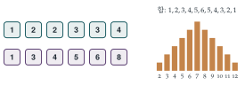

STEP I 1993, 문제 1
계속 읽기 전에 문제를 먼저 읽어 보자. 문제는 STEP Support Programme의 문제 데이터베이스에 있다: step.maths.org/questions/93-s1-q1
도입
육면체 주사위(dice) 두 개에 양의 정수를 적는 방법 가운데, \(2\)부터 \(12\)까지의 모든 합이 보통 주사위와 정확히 같은 횟수만큼 나오도록 하는 다른 방법이 있을까? 1978년에 마틴 가드너(Martin Gardner)는 Scientific American에서 그런 방법이 정확히 하나 있다고 발표했다. \(1, 2, 2, 3, 3, 4\)가 적힌 주사위와 \(1, 3, 4, 5, 6, 8\)이 적힌 주사위이다. 이 주사위는 조지 시커먼(George Sicherman) 대령이 발견했으며, 지금은 시커먼 주사위(Sicherman dice)라는 이름으로 판매된다. 이 주사위로 모노폴리를 하면 보통 주사위로 하는 게임과 전혀 구별할 수 없을 것이다.
이 문제는 준비 운동이다. 합의 표로부터 두 주사위에 어떤 수가 적혀 있는지 추론하는 것이다. 이를 체계적으로 하는 방법과, 시커먼 주사위가 유일한 이상한 주사위 쌍이라는 증명은 모두 각 주사위를 다항식(polynomial)으로 바꾸는 데서 나온다.
시작하기 전에
첫 번째 주사위에 \(i\)가 적힌 면이 \(p_i\)개 있고 두 번째 주사위에 \(j\)가 적힌 면이 \(q_j\)개 있다면, 합이 \(t\)가 되도록 던지는 방법은 몇 가지인가?
방법의 수는 \(\sum_i p_iq_{t-i}\)이다. 첫 번째 주사위의 수 \(i\)를 고르면 두 번째 주사위는 \(t - i\)를 보여야 하기 때문이다. 첫 번째 주사위 쌍의 경우, 합 \(6\)은 \(1 + 5\)(\(1 \times 1\)가지), \(2 + 4\)(\(2 \times 1\)가지), \(3 + 3\)(\(2 \times 2\)가지)에서 나오고 그 밖에는 없다. 첫 번째 주사위에는 \(4\)나 \(5\)가 없고 두 번째 주사위에는 \(0\)이 없기 때문이다. 따라서 \(1 + 2 + 4 = 7\)가지이다.■
차근차근 풀기
단계 1 양 끝
두 주사위를 \(A\)와 \(B\)라 하고, 각 주사위에서 \(i\)가 적힌 면의 개수를 \(a_i\), \(b_i\)라 하자.
합 \(2\)를 던지는 방법도, 합 \(12\)를 던지는 방법도 없다. 이것은 \(1\)과 \(6\)에 대해 무엇을 말해 주는가? 합 \(3\)을 던지는 방법은 두 가지 있다. 어느 주사위에 \(1\)이 있는가?
합 \(2\)가 나오지 않으므로 \(a_1b_1 = 0\)이다. 즉 \(1\)이 적힌 면은 많아야 한 주사위에만 있다. 합 \(3\)은 \(1 + 2\) 또는 \(2 + 1\)로만 나올 수 있고 그 방법이 두 가지이므로, 어떤 주사위에는 \(1\)이 실제로 있다. 그 주사위를 \(A\)라 하면 \(b_1 = 0\)이다. 그러면 \[\text{합 } 3: \quad a_1b_2 = 2, \qquad\text{따라서 } (a_1, b_2) = (2, 1) \text{ 또는 } (1, 2).\] 마찬가지로 합 \(12\)가 나오지 않으므로 \(a_6b_6 = 0\)이다.
단계 2 위로 올라가기
\(b_1 = 0\)임을 기억하면서 합 \(4\)에 대한 방정식을 써 보라. 두 경우 각각에서 이 방정식은 무엇을 말해 주는가?
합 \(4\)는 \(1 + 3\) 또는 \(2 + 2\)이므로(\(b_1 = 0\)이므로 \(3 + 1\)은 불가능하다) \(a_1b_3 + a_2b_2 = 1\)이다.
경우 (a), \(a_1 = 2\), \(b_2 = 1\): \(2b_3 + a_2 = 1\)이므로 \(b_3 = 0\), \(a_2 = 1\)이다.
경우 (b), \(a_1 = 1\), \(b_2 = 2\): \(b_3 + 2a_2 = 1\)이므로 \(a_2 = 0\), \(b_3 = 1\)이다.
합 \(5\): \(a_1b_4 + a_2b_3 + a_3b_2 = 1\).
경우 (a): \(2b_4 + 0 + a_3 = 1\)이므로 \(b_4 = 0\), \(a_3 = 1\)이다. 지금까지 \(A\)에는 \(1, 1, 2, 3\)이 있고 \(B\)에는 \(2\)가 있다. \(B\)의 나머지 다섯 면은 \(5\) 또는 \(6\)이다.
경우 (b): \(b_4 + 0 + 2a_3 = 1\)이므로 \(a_3 = 0\), \(b_4 = 1\)이다. 지금까지 \(A\)에는 \(1\)이 있고 \(B\)에는 \(2, 2, 3, 4\)가 있다. \(A\)의 나머지 다섯 면은 \(4, 5, 6\) 중에서, \(B\)의 나머지 두 면은 \(5, 6\) 중에서 나온다.
단계 3 경우 (a)는 실패한다
경우 (a)에서 합 \(7\)에 대한 방정식을 쓰고 \(b_5 + b_6 = 5\)를 이용하라.
합 \(7\): \(a_1b_6 + a_2b_5 + a_3b_4 + a_4b_3 + a_5b_2 = 2b_6 + b_5 + 0 + 0 + a_5 = 3\). \(b_6 = 5 - b_5\)를 대입하면 \(10 - b_5 + a_5 = 3\)이므로 \(b_5 = 7 + a_5 \geq 7\)이다. 그러나 \(B\)의 면은 여섯 개뿐이다. 따라서 경우 (a)는 불가능하다.
단계 4 경우 (b)는 성공한다
경우 (b)에서 합 \(6\)과 \(11\), 그리고 \(a_6b_6 = 0\)이라는 사실을 이용하라.
합 \(6\): \(a_1b_5 + a_4b_2 = b_5 + 2a_4 = 4\)이다(나머지 곱에는 \(a_2 = a_3 = 0\) 또는 \(b_1 = 0\)이 들어 있다). \(b_5 \leq 2\)이고 \(b_5 = 4 - 2a_4\)는 짝수이므로, \(b_5 = 0, a_4 = 2\)이거나 \(b_5 = 2, a_4 = 1\)이다.
\(b_5 = 0\)이면 \(B\)는 \(2, 2, 3, 4, 6, 6\)이므로 \(a_6 = 0\)이고 \(A\)는 \(1, 4, 4, 5, 5, 5\)이다. 그런데 그러면 합 \(7\)이 나오는 방법은 \(3\)가지가 아니라 \(a_1b_6 + a_4b_3 + a_5b_2 = 2 + 2 + 6 = 10\)가지가 된다.
\(b_5 = 2\)이면 \(B\)는 \(2, 2, 3, 4, 5, 5\)이고 \(b_6 = 0\)이며, \(A\)는 \(1, 4\)와 \(5\), \(6\) 중에서 나온 네 면으로 이루어진다. 합 \(11\): \(a_6b_5 = 2a_6 = 6\)이므로 \(a_6 = 3\), \(a_5 = 1\)이다.
가능한 것은 다음뿐이다. \[A:\ 1, 4, 5, 6, 6, 6, \qquad B:\ 2, 2, 3, 4, 5, 5.\] 마지막으로, 지금까지 합의 일부만 사용했으므로 이 주사위가 표 전체를 만들어 내는지 확인해야 한다. 곱을 전개해 보면(또는 아래의 다항식을 이용하면) 모든 항목이 맞음을 확인할 수 있다.■
돌아보기
양 끝에서 시작하라. 가장 작은 합과 가장 큰 합에는 곱이 한두 개만 들어 있으므로 가장 강력한 정보를 준다.
경우를 나누고 하나씩 제거하라. 각각의 합이 가능성을 줄여 나갔고, 결국 하나의 경우만 살아남았다.
충분성(sufficiency)을 확인하라. 추론은 주사위가 반드시 어떠해야 하는지를 보여 주었고, 마지막 확인은 그 주사위가 실제로 조건을 만족함을 보여 주었다.
숨은 수학
다항식으로 나타낸 주사위
각 주사위를 다항식으로 나타내되, \(i\)가 적힌 면 하나마다 항 \(x^i\)를 하나씩 둔다. 보통 주사위는 \(x + x^2 + x^3 + x^4 + x^5 + x^6\)이고, 문제의 주사위는 \[A(x) = x + x^4 + x^5 + 3x^6, \qquad B(x) = 2x^2 + x^3 + x^4 + 2x^5.\] 이다. 곱하면 면의 각 쌍이 \(x^ix^j = x^{i+j}\)를 기여하므로, \(A(x)B(x)\)에서 \(x^t\)의 계수는 합 \(t\)를 던지는 방법의 수이다. 이것은 다시 한번 9.4 절의 생성함수(generating function) 아이디어이다. 합의 표는 곱 \(A(x)B(x)\)일 뿐이며, 앞에서 경우를 나누어 한 추론은 이 곱을 인수분해(factorisation)하는 한 가지 방법이었다.
시커먼 주사위
보통 주사위 두 개의 경우 곱은 \((x + x^2 + \cdots + x^6)^2\)이다. 같은 합의 분포를 갖는 주사위 쌍은 \(P(x)Q(x) = (x + \cdots + x^6)^2\)을 만족하는 다항식 \(P(x)\), \(Q(x)\)를 가져야 한다. 이제 인수분해하면 \[x + x^2 + \cdots + x^6 = x(1 + x)(1 + x + x^2)(1 - x + x^2),\] 이고, 이 인수들은 (정수 계수 다항식으로) 더 이상 분해할 수 없다. 따라서 \(P\)와 \(Q\)는 각각 인수 \(x\), \(1 + x\), \(1 + x + x^2\), \(1 - x + x^2\)로 만들어져야 하며, 각 인수는 모두 합쳐 두 번씩 나타난다. 세 가지 조건이 선택의 폭을 좁힌다.
각 주사위는 면이 \(6\)개이므로 \(P(1) = Q(1) = 6\)이다. 각 인수는 \(x = 1\)에서 값 \(1\), \(2\), \(3\), \(1\)을 가지므로, 각 주사위는 \(1 + x\) 하나와 \(1 + x + x^2\) 하나를 갖는다.
\(0\)이 적힌 면은 없으므로 \(P(0) = Q(0) = 0\)이다. 즉 각 주사위는 인수 \(x\)를 하나씩 갖는다.
남은 자유는 \(1 - x + x^2\) 두 개를 어떻게 나누느냐뿐이다. 하나씩 나누면 보통 주사위가 된다. 둘 다 한 주사위에 주면 \[\begin{aligned} x(1 + x)(1 + x + x^2) &= x + 2x^2 + 2x^3 + x^4, \\ x(1 + x)(1 + x + x^2)(1 - x + x^2)^2 &= x + x^3 + x^4 + x^5 + x^6 + x^8. \end{aligned}\]
이것이 시커먼 주사위 \(1, 2, 2, 3, 3, 4\)와 \(1, 3, 4, 5, 6, 8\)이며(그림 9.6.1), 이 논증은 이것이 유일한 대안임을 증명한다. 핵심은 다항식도 정수처럼 기약(irreducible) 다항식으로 유일하게 인수분해된다는 사실이다. 정수론(number theory)과 조합론(combinatorics)이 여기서 만난다.

확률에서는 같은 아이디어가 확률생성함수(probability generating function)로 나타난다. 값 \(0, 1, 2, \ldots\)를 갖는 확률변수(random variable) \(X\)에 대하여 \(\mathrm{G}(t) = \mathrm{E}(t^X) = \sum \mathrm{P}(X = k)t^k\)이고, 서로 독립(independent)인 \(X\)와 \(Y\)에 대하여 \(\mathrm{E}(t^{X+Y}) = \mathrm{E}(t^X)\mathrm{E}(t^Y)\)이다. 독립인 확률변수의 합은 생성함수의 곱에 대응한다. STEP III 2003 Q14(연습문제에 있다)는 이 방법으로 시커먼 주사위를 찾으며, 9.13 절에서는 이와 관련된 논증으로 두 주사위에 어떻게 무게를 실어도 모든 합이 같은 확률로 나오게 할 수 없음을 보인다.
사고 기술
대상들이 그 값을 더하는 방식으로 결합될 때, 각 대상을 \(x\)에 대한 다항식으로 나타내라. 결합은 곱셈이 되고, 결합에 관한 질문은 인수분해에 관한 질문이 된다.
여기서는 주사위에 관한 질문이 다항식의 유일 인수분해 문제로 바뀌었다. 대학에서는 이런 부호화가 어디에나 있다. 조합론에서, 확률에서, 그리고 다항식을 정수와 비슷한 산술을 갖는 환(ring)으로서 그 자체로 연구하는 대수학에서도 그렇다.
더 도전하기
사면체 주사위. STEP III 2003, 문제 14를 풀어 보라. 이 문제는 면이 네 개인 주사위에 대해 시커먼의 질문을 던진다. (힌트: \(x + x^2 + x^3 + x^4 = x(1 + x)(1 + x^2)\).)
표 확인하기. \((x + x^4 + x^5 + 3x^6)(2x^2 + x^3 + x^4 + 2x^5)\)를 전개하여 문제의 표와 맞는지 확인하라.
주사위 세 개. 모두 표준 주사위는 아니면서 양의 정수가 적힌 육면체 주사위 세 개로, 합의 분포가 표준 주사위 세 개와 같은 것이 있는가? (힌트: 이제 \((x + \cdots + x^6)^3\)의 인수에는 \(1 - x + x^2\)가 세 개 들어 있다.)
동전과 팔면체. \(1, \ldots, 8\)이 적힌 팔면체 주사위와 \(1, 2\)가 적힌 이면 “주사위”(동전)가 있다. 같은 합의 분포를 유지하면서 수를 다르게 적을 수 있는가?
더 읽을거리
Martin Gardner, Penrose Tiles to Trapdoor Ciphers (Mathematical Association of America). 시커먼 주사위에 관한 칼럼이 실려 있다.
Joseph Gallian & David Rusin, “Cyclotomic polynomials and nonstandard dice”, Discrete Mathematics 27 (1979). 면의 개수가 임의인 주사위에 대한 일반 이론을 다룬다.
Herbert Wilf, generatingfunctionology (온라인에서 무료로 볼 수 있다), 1장.